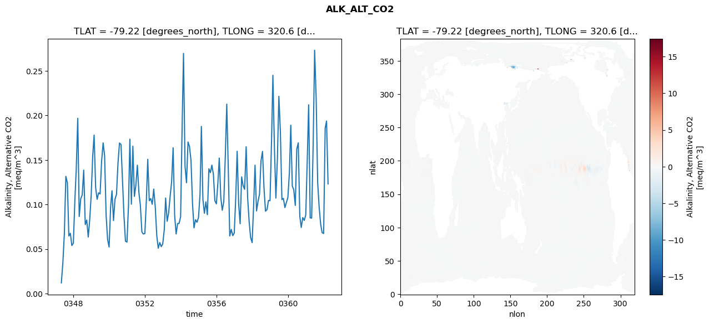
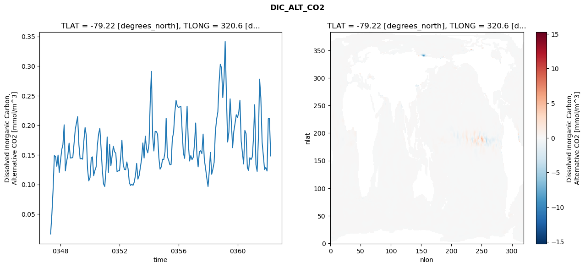
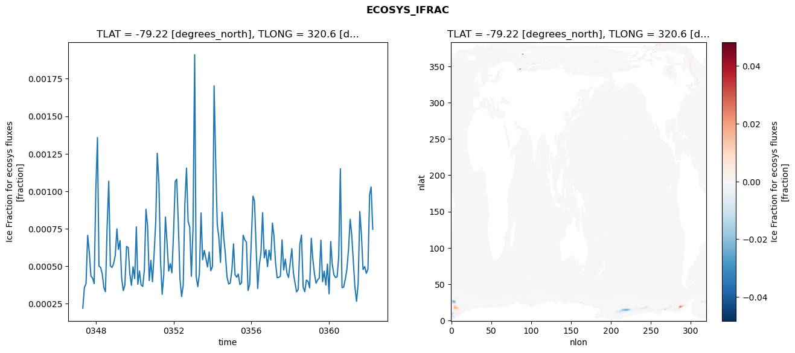
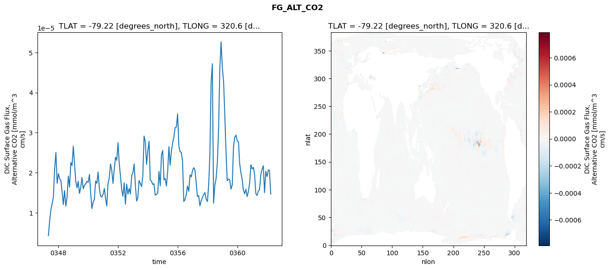

glb-dor_North_Atlantic_basin_002_1999-04-01_00009#
Simulation details#
Case: smyle.cdr-atlas-v0.glb-dor_North_Atlantic_basin_002_1999-04-01_00009.001
Basin: North_Atlantic_basin
Polygon: 2.0
Start date: 1999-04
Show code cell source Hide code cell source
import xarray as xr
import matplotlib.pyplot as plt
Show code cell source Hide code cell source
zarr_store = "/path/to/zarr/store"
# Parameters
zarr_store = "/global/cfs/projectdirs/m4746/Projects/Ocean-CDR-Atlas-v0/data/validation/smyle.cdr-atlas-v0.glb-dor_North_Atlantic_basin_002_1999-04-01_00009.001.validation.zarr"
Show code cell source Hide code cell source
%%time
ds_o = xr.open_zarr(zarr_store).compute()
ds_o
CPU times: user 565 ms, sys: 524 ms, total: 1.09 s
Wall time: 1.33 s
<xarray.Dataset> Size: 2MB
Dimensions: (nlat: 384, nlon: 320, time: 180)
Coordinates:
TLAT float64 8B -79.22
TLONG float64 8B 320.6
ULAT float64 8B -78.95
ULONG float64 8B 321.1
* time (time) object 1kB 0347-05-01 00:00:00 ... 0362-04-01 0...
z_t float32 4B 500.0
Dimensions without coordinates: nlat, nlon
Data variables:
ALK_ALT_CO2_diff (nlat, nlon) float32 492kB nan nan nan ... nan nan nan
ALK_ALT_CO2_rmse (time) float64 1kB 0.01198 0.03465 ... 0.1937 0.1231
DIC_ALT_CO2_diff (nlat, nlon) float32 492kB nan nan nan ... nan nan nan
DIC_ALT_CO2_rmse (time) float64 1kB 0.01632 0.0496 ... 0.2117 0.1481
ECOSYS_IFRAC_diff (nlat, nlon) float32 492kB nan nan nan ... nan nan nan
ECOSYS_IFRAC_rmse (time) float64 1kB 0.0002208 0.0003587 ... 0.0007468
FG_ALT_CO2_diff (nlat, nlon) float32 492kB nan nan nan ... nan nan nan
FG_ALT_CO2_rmse (time) float64 1kB 4.241e-06 8.014e-06 ... 1.465e-05xarray.Dataset
- nlat: 384
- nlon: 320
- time: 180
- TLAT()float64-79.22
- long_name :
- array of t-grid latitudes
- units :
- degrees_north
array(-79.22052261)
- TLONG()float64320.6
- long_name :
- array of t-grid longitudes
- units :
- degrees_east
array(320.56250892)
- ULAT()float64-78.95
- long_name :
- array of u-grid latitudes
- units :
- degrees_north
array(-78.95289509)
- ULONG()float64321.1
- long_name :
- array of u-grid longitudes
- units :
- degrees_east
array(321.12500894)
- time(time)object0347-05-01 00:00:00 ... 0362-04-...
- bounds :
- time_bound
- long_name :
- time
array([cftime.DatetimeNoLeap(347, 5, 1, 0, 0, 0, 0, has_year_zero=True), cftime.DatetimeNoLeap(347, 6, 1, 0, 0, 0, 0, has_year_zero=True), cftime.DatetimeNoLeap(347, 7, 1, 0, 0, 0, 0, has_year_zero=True), cftime.DatetimeNoLeap(347, 8, 1, 0, 0, 0, 0, has_year_zero=True), cftime.DatetimeNoLeap(347, 9, 1, 0, 0, 0, 0, has_year_zero=True), cftime.DatetimeNoLeap(347, 10, 1, 0, 0, 0, 0, has_year_zero=True), cftime.DatetimeNoLeap(347, 11, 1, 0, 0, 0, 0, has_year_zero=True), cftime.DatetimeNoLeap(347, 12, 1, 0, 0, 0, 0, has_year_zero=True), cftime.DatetimeNoLeap(348, 1, 1, 0, 0, 0, 0, has_year_zero=True), cftime.DatetimeNoLeap(348, 2, 1, 0, 0, 0, 0, has_year_zero=True), cftime.DatetimeNoLeap(348, 3, 1, 0, 0, 0, 0, has_year_zero=True), cftime.DatetimeNoLeap(348, 4, 1, 0, 0, 0, 0, has_year_zero=True), cftime.DatetimeNoLeap(348, 5, 1, 0, 0, 0, 0, has_year_zero=True), cftime.DatetimeNoLeap(348, 6, 1, 0, 0, 0, 0, has_year_zero=True), cftime.DatetimeNoLeap(348, 7, 1, 0, 0, 0, 0, has_year_zero=True), cftime.DatetimeNoLeap(348, 8, 1, 0, 0, 0, 0, has_year_zero=True), cftime.DatetimeNoLeap(348, 9, 1, 0, 0, 0, 0, has_year_zero=True), cftime.DatetimeNoLeap(348, 10, 1, 0, 0, 0, 0, has_year_zero=True), cftime.DatetimeNoLeap(348, 11, 1, 0, 0, 0, 0, has_year_zero=True), cftime.DatetimeNoLeap(348, 12, 1, 0, 0, 0, 0, has_year_zero=True), cftime.DatetimeNoLeap(349, 1, 1, 0, 0, 0, 0, has_year_zero=True), cftime.DatetimeNoLeap(349, 2, 1, 0, 0, 0, 0, has_year_zero=True), cftime.DatetimeNoLeap(349, 3, 1, 0, 0, 0, 0, has_year_zero=True), cftime.DatetimeNoLeap(349, 4, 1, 0, 0, 0, 0, has_year_zero=True), cftime.DatetimeNoLeap(349, 5, 1, 0, 0, 0, 0, has_year_zero=True), cftime.DatetimeNoLeap(349, 6, 1, 0, 0, 0, 0, has_year_zero=True), cftime.DatetimeNoLeap(349, 7, 1, 0, 0, 0, 0, has_year_zero=True), cftime.DatetimeNoLeap(349, 8, 1, 0, 0, 0, 0, has_year_zero=True), cftime.DatetimeNoLeap(349, 9, 1, 0, 0, 0, 0, has_year_zero=True), cftime.DatetimeNoLeap(349, 10, 1, 0, 0, 0, 0, has_year_zero=True), cftime.DatetimeNoLeap(349, 11, 1, 0, 0, 0, 0, has_year_zero=True), cftime.DatetimeNoLeap(349, 12, 1, 0, 0, 0, 0, has_year_zero=True), cftime.DatetimeNoLeap(350, 1, 1, 0, 0, 0, 0, has_year_zero=True), cftime.DatetimeNoLeap(350, 2, 1, 0, 0, 0, 0, has_year_zero=True), cftime.DatetimeNoLeap(350, 3, 1, 0, 0, 0, 0, has_year_zero=True), cftime.DatetimeNoLeap(350, 4, 1, 0, 0, 0, 0, has_year_zero=True), cftime.DatetimeNoLeap(350, 5, 1, 0, 0, 0, 0, has_year_zero=True), cftime.DatetimeNoLeap(350, 6, 1, 0, 0, 0, 0, has_year_zero=True), cftime.DatetimeNoLeap(350, 7, 1, 0, 0, 0, 0, has_year_zero=True), cftime.DatetimeNoLeap(350, 8, 1, 0, 0, 0, 0, has_year_zero=True), cftime.DatetimeNoLeap(350, 9, 1, 0, 0, 0, 0, has_year_zero=True), cftime.DatetimeNoLeap(350, 10, 1, 0, 0, 0, 0, has_year_zero=True), cftime.DatetimeNoLeap(350, 11, 1, 0, 0, 0, 0, has_year_zero=True), cftime.DatetimeNoLeap(350, 12, 1, 0, 0, 0, 0, has_year_zero=True), cftime.DatetimeNoLeap(351, 1, 1, 0, 0, 0, 0, has_year_zero=True), cftime.DatetimeNoLeap(351, 2, 1, 0, 0, 0, 0, has_year_zero=True), cftime.DatetimeNoLeap(351, 3, 1, 0, 0, 0, 0, has_year_zero=True), cftime.DatetimeNoLeap(351, 4, 1, 0, 0, 0, 0, has_year_zero=True), cftime.DatetimeNoLeap(351, 5, 1, 0, 0, 0, 0, has_year_zero=True), cftime.DatetimeNoLeap(351, 6, 1, 0, 0, 0, 0, has_year_zero=True), cftime.DatetimeNoLeap(351, 7, 1, 0, 0, 0, 0, has_year_zero=True), cftime.DatetimeNoLeap(351, 8, 1, 0, 0, 0, 0, has_year_zero=True), cftime.DatetimeNoLeap(351, 9, 1, 0, 0, 0, 0, has_year_zero=True), cftime.DatetimeNoLeap(351, 10, 1, 0, 0, 0, 0, has_year_zero=True), cftime.DatetimeNoLeap(351, 11, 1, 0, 0, 0, 0, has_year_zero=True), cftime.DatetimeNoLeap(351, 12, 1, 0, 0, 0, 0, has_year_zero=True), cftime.DatetimeNoLeap(352, 1, 1, 0, 0, 0, 0, has_year_zero=True), cftime.DatetimeNoLeap(352, 2, 1, 0, 0, 0, 0, has_year_zero=True), cftime.DatetimeNoLeap(352, 3, 1, 0, 0, 0, 0, has_year_zero=True), cftime.DatetimeNoLeap(352, 4, 1, 0, 0, 0, 0, has_year_zero=True), cftime.DatetimeNoLeap(352, 5, 1, 0, 0, 0, 0, has_year_zero=True), cftime.DatetimeNoLeap(352, 6, 1, 0, 0, 0, 0, has_year_zero=True), cftime.DatetimeNoLeap(352, 7, 1, 0, 0, 0, 0, has_year_zero=True), cftime.DatetimeNoLeap(352, 8, 1, 0, 0, 0, 0, has_year_zero=True), cftime.DatetimeNoLeap(352, 9, 1, 0, 0, 0, 0, has_year_zero=True), cftime.DatetimeNoLeap(352, 10, 1, 0, 0, 0, 0, has_year_zero=True), cftime.DatetimeNoLeap(352, 11, 1, 0, 0, 0, 0, has_year_zero=True), cftime.DatetimeNoLeap(352, 12, 1, 0, 0, 0, 0, has_year_zero=True), cftime.DatetimeNoLeap(353, 1, 1, 0, 0, 0, 0, has_year_zero=True), cftime.DatetimeNoLeap(353, 2, 1, 0, 0, 0, 0, has_year_zero=True), cftime.DatetimeNoLeap(353, 3, 1, 0, 0, 0, 0, has_year_zero=True), cftime.DatetimeNoLeap(353, 4, 1, 0, 0, 0, 0, has_year_zero=True), cftime.DatetimeNoLeap(353, 5, 1, 0, 0, 0, 0, has_year_zero=True), cftime.DatetimeNoLeap(353, 6, 1, 0, 0, 0, 0, has_year_zero=True), cftime.DatetimeNoLeap(353, 7, 1, 0, 0, 0, 0, has_year_zero=True), cftime.DatetimeNoLeap(353, 8, 1, 0, 0, 0, 0, has_year_zero=True), cftime.DatetimeNoLeap(353, 9, 1, 0, 0, 0, 0, has_year_zero=True), cftime.DatetimeNoLeap(353, 10, 1, 0, 0, 0, 0, has_year_zero=True), cftime.DatetimeNoLeap(353, 11, 1, 0, 0, 0, 0, has_year_zero=True), cftime.DatetimeNoLeap(353, 12, 1, 0, 0, 0, 0, has_year_zero=True), cftime.DatetimeNoLeap(354, 1, 1, 0, 0, 0, 0, has_year_zero=True), cftime.DatetimeNoLeap(354, 2, 1, 0, 0, 0, 0, has_year_zero=True), cftime.DatetimeNoLeap(354, 3, 1, 0, 0, 0, 0, has_year_zero=True), cftime.DatetimeNoLeap(354, 4, 1, 0, 0, 0, 0, has_year_zero=True), cftime.DatetimeNoLeap(354, 5, 1, 0, 0, 0, 0, has_year_zero=True), cftime.DatetimeNoLeap(354, 6, 1, 0, 0, 0, 0, has_year_zero=True), cftime.DatetimeNoLeap(354, 7, 1, 0, 0, 0, 0, has_year_zero=True), cftime.DatetimeNoLeap(354, 8, 1, 0, 0, 0, 0, has_year_zero=True), cftime.DatetimeNoLeap(354, 9, 1, 0, 0, 0, 0, has_year_zero=True), cftime.DatetimeNoLeap(354, 10, 1, 0, 0, 0, 0, has_year_zero=True), cftime.DatetimeNoLeap(354, 11, 1, 0, 0, 0, 0, has_year_zero=True), cftime.DatetimeNoLeap(354, 12, 1, 0, 0, 0, 0, has_year_zero=True), cftime.DatetimeNoLeap(355, 1, 1, 0, 0, 0, 0, has_year_zero=True), cftime.DatetimeNoLeap(355, 2, 1, 0, 0, 0, 0, has_year_zero=True), cftime.DatetimeNoLeap(355, 3, 1, 0, 0, 0, 0, has_year_zero=True), cftime.DatetimeNoLeap(355, 4, 1, 0, 0, 0, 0, has_year_zero=True), cftime.DatetimeNoLeap(355, 5, 1, 0, 0, 0, 0, has_year_zero=True), cftime.DatetimeNoLeap(355, 6, 1, 0, 0, 0, 0, has_year_zero=True), cftime.DatetimeNoLeap(355, 7, 1, 0, 0, 0, 0, has_year_zero=True), cftime.DatetimeNoLeap(355, 8, 1, 0, 0, 0, 0, has_year_zero=True), cftime.DatetimeNoLeap(355, 9, 1, 0, 0, 0, 0, has_year_zero=True), cftime.DatetimeNoLeap(355, 10, 1, 0, 0, 0, 0, has_year_zero=True), cftime.DatetimeNoLeap(355, 11, 1, 0, 0, 0, 0, has_year_zero=True), cftime.DatetimeNoLeap(355, 12, 1, 0, 0, 0, 0, has_year_zero=True), cftime.DatetimeNoLeap(356, 1, 1, 0, 0, 0, 0, has_year_zero=True), cftime.DatetimeNoLeap(356, 2, 1, 0, 0, 0, 0, has_year_zero=True), cftime.DatetimeNoLeap(356, 3, 1, 0, 0, 0, 0, has_year_zero=True), cftime.DatetimeNoLeap(356, 4, 1, 0, 0, 0, 0, has_year_zero=True), cftime.DatetimeNoLeap(356, 5, 1, 0, 0, 0, 0, has_year_zero=True), cftime.DatetimeNoLeap(356, 6, 1, 0, 0, 0, 0, has_year_zero=True), cftime.DatetimeNoLeap(356, 7, 1, 0, 0, 0, 0, has_year_zero=True), cftime.DatetimeNoLeap(356, 8, 1, 0, 0, 0, 0, has_year_zero=True), cftime.DatetimeNoLeap(356, 9, 1, 0, 0, 0, 0, has_year_zero=True), cftime.DatetimeNoLeap(356, 10, 1, 0, 0, 0, 0, has_year_zero=True), cftime.DatetimeNoLeap(356, 11, 1, 0, 0, 0, 0, has_year_zero=True), cftime.DatetimeNoLeap(356, 12, 1, 0, 0, 0, 0, has_year_zero=True), cftime.DatetimeNoLeap(357, 1, 1, 0, 0, 0, 0, has_year_zero=True), cftime.DatetimeNoLeap(357, 2, 1, 0, 0, 0, 0, has_year_zero=True), cftime.DatetimeNoLeap(357, 3, 1, 0, 0, 0, 0, has_year_zero=True), cftime.DatetimeNoLeap(357, 4, 1, 0, 0, 0, 0, has_year_zero=True), cftime.DatetimeNoLeap(357, 5, 1, 0, 0, 0, 0, has_year_zero=True), cftime.DatetimeNoLeap(357, 6, 1, 0, 0, 0, 0, has_year_zero=True), cftime.DatetimeNoLeap(357, 7, 1, 0, 0, 0, 0, has_year_zero=True), cftime.DatetimeNoLeap(357, 8, 1, 0, 0, 0, 0, has_year_zero=True), cftime.DatetimeNoLeap(357, 9, 1, 0, 0, 0, 0, has_year_zero=True), cftime.DatetimeNoLeap(357, 10, 1, 0, 0, 0, 0, has_year_zero=True), cftime.DatetimeNoLeap(357, 11, 1, 0, 0, 0, 0, has_year_zero=True), cftime.DatetimeNoLeap(357, 12, 1, 0, 0, 0, 0, has_year_zero=True), cftime.DatetimeNoLeap(358, 1, 1, 0, 0, 0, 0, has_year_zero=True), cftime.DatetimeNoLeap(358, 2, 1, 0, 0, 0, 0, has_year_zero=True), cftime.DatetimeNoLeap(358, 3, 1, 0, 0, 0, 0, has_year_zero=True), cftime.DatetimeNoLeap(358, 4, 1, 0, 0, 0, 0, has_year_zero=True), cftime.DatetimeNoLeap(358, 5, 1, 0, 0, 0, 0, has_year_zero=True), cftime.DatetimeNoLeap(358, 6, 1, 0, 0, 0, 0, has_year_zero=True), cftime.DatetimeNoLeap(358, 7, 1, 0, 0, 0, 0, has_year_zero=True), cftime.DatetimeNoLeap(358, 8, 1, 0, 0, 0, 0, has_year_zero=True), cftime.DatetimeNoLeap(358, 9, 1, 0, 0, 0, 0, has_year_zero=True), cftime.DatetimeNoLeap(358, 10, 1, 0, 0, 0, 0, has_year_zero=True), cftime.DatetimeNoLeap(358, 11, 1, 0, 0, 0, 0, has_year_zero=True), cftime.DatetimeNoLeap(358, 12, 1, 0, 0, 0, 0, has_year_zero=True), cftime.DatetimeNoLeap(359, 1, 1, 0, 0, 0, 0, has_year_zero=True), cftime.DatetimeNoLeap(359, 2, 1, 0, 0, 0, 0, has_year_zero=True), cftime.DatetimeNoLeap(359, 3, 1, 0, 0, 0, 0, has_year_zero=True), cftime.DatetimeNoLeap(359, 4, 1, 0, 0, 0, 0, has_year_zero=True), cftime.DatetimeNoLeap(359, 5, 1, 0, 0, 0, 0, has_year_zero=True), cftime.DatetimeNoLeap(359, 6, 1, 0, 0, 0, 0, has_year_zero=True), cftime.DatetimeNoLeap(359, 7, 1, 0, 0, 0, 0, has_year_zero=True), cftime.DatetimeNoLeap(359, 8, 1, 0, 0, 0, 0, has_year_zero=True), cftime.DatetimeNoLeap(359, 9, 1, 0, 0, 0, 0, has_year_zero=True), cftime.DatetimeNoLeap(359, 10, 1, 0, 0, 0, 0, has_year_zero=True), cftime.DatetimeNoLeap(359, 11, 1, 0, 0, 0, 0, has_year_zero=True), cftime.DatetimeNoLeap(359, 12, 1, 0, 0, 0, 0, has_year_zero=True), cftime.DatetimeNoLeap(360, 1, 1, 0, 0, 0, 0, has_year_zero=True), cftime.DatetimeNoLeap(360, 2, 1, 0, 0, 0, 0, has_year_zero=True), cftime.DatetimeNoLeap(360, 3, 1, 0, 0, 0, 0, has_year_zero=True), cftime.DatetimeNoLeap(360, 4, 1, 0, 0, 0, 0, has_year_zero=True), cftime.DatetimeNoLeap(360, 5, 1, 0, 0, 0, 0, has_year_zero=True), cftime.DatetimeNoLeap(360, 6, 1, 0, 0, 0, 0, has_year_zero=True), cftime.DatetimeNoLeap(360, 7, 1, 0, 0, 0, 0, has_year_zero=True), cftime.DatetimeNoLeap(360, 8, 1, 0, 0, 0, 0, has_year_zero=True), cftime.DatetimeNoLeap(360, 9, 1, 0, 0, 0, 0, has_year_zero=True), cftime.DatetimeNoLeap(360, 10, 1, 0, 0, 0, 0, has_year_zero=True), cftime.DatetimeNoLeap(360, 11, 1, 0, 0, 0, 0, has_year_zero=True), cftime.DatetimeNoLeap(360, 12, 1, 0, 0, 0, 0, has_year_zero=True), cftime.DatetimeNoLeap(361, 1, 1, 0, 0, 0, 0, has_year_zero=True), cftime.DatetimeNoLeap(361, 2, 1, 0, 0, 0, 0, has_year_zero=True), cftime.DatetimeNoLeap(361, 3, 1, 0, 0, 0, 0, has_year_zero=True), cftime.DatetimeNoLeap(361, 4, 1, 0, 0, 0, 0, has_year_zero=True), cftime.DatetimeNoLeap(361, 5, 1, 0, 0, 0, 0, has_year_zero=True), cftime.DatetimeNoLeap(361, 6, 1, 0, 0, 0, 0, has_year_zero=True), cftime.DatetimeNoLeap(361, 7, 1, 0, 0, 0, 0, has_year_zero=True), cftime.DatetimeNoLeap(361, 8, 1, 0, 0, 0, 0, has_year_zero=True), cftime.DatetimeNoLeap(361, 9, 1, 0, 0, 0, 0, has_year_zero=True), cftime.DatetimeNoLeap(361, 10, 1, 0, 0, 0, 0, has_year_zero=True), cftime.DatetimeNoLeap(361, 11, 1, 0, 0, 0, 0, has_year_zero=True), cftime.DatetimeNoLeap(361, 12, 1, 0, 0, 0, 0, has_year_zero=True), cftime.DatetimeNoLeap(362, 1, 1, 0, 0, 0, 0, has_year_zero=True), cftime.DatetimeNoLeap(362, 2, 1, 0, 0, 0, 0, has_year_zero=True), cftime.DatetimeNoLeap(362, 3, 1, 0, 0, 0, 0, has_year_zero=True), cftime.DatetimeNoLeap(362, 4, 1, 0, 0, 0, 0, has_year_zero=True)], dtype=object) - z_t()float32500.0
- long_name :
- depth from surface to midpoint of layer
- positive :
- down
- units :
- centimeters
- valid_max :
- 537500.0
- valid_min :
- 500.0
array(500., dtype=float32)
- ALK_ALT_CO2_diff(nlat, nlon)float32nan nan nan nan ... nan nan nan nan
- cell_methods :
- time: mean
- grid_loc :
- 3111
- long_name :
- Alkalinity, Alternative CO2
- units :
- meq/m^3
array([[ nan, nan, nan, ..., nan, nan, nan], [ nan, nan, nan, ..., nan, nan, nan], [0.0078125 , 0.03491211, 0.04858398, ..., nan, nan, nan], ..., [ nan, nan, nan, ..., nan, nan, nan], [ nan, nan, nan, ..., nan, nan, nan], [ nan, nan, nan, ..., nan, nan, nan]], dtype=float32) - ALK_ALT_CO2_rmse(time)float640.01198 0.03465 ... 0.1937 0.1231
- cell_methods :
- time: mean
- grid_loc :
- 3111
- long_name :
- Alkalinity, Alternative CO2
- units :
- meq/m^3
array([0.01198041, 0.03465402, 0.06668605, 0.13157718, 0.12424656, 0.06462076, 0.06767953, 0.05387837, 0.05657857, 0.10440582, 0.13949952, 0.19680649, 0.08648139, 0.10641141, 0.11079039, 0.13864099, 0.07746117, 0.08257576, 0.06345275, 0.08274624, 0.11136318, 0.15513064, 0.17799887, 0.11923302, 0.10581918, 0.11313399, 0.1118523 , 0.1487565 , 0.16916955, 0.15480922, 0.0879339 , 0.06075867, 0.05231161, 0.09729934, 0.11544242, 0.08195942, 0.10576038, 0.11149354, 0.14603492, 0.16906221, 0.16735454, 0.12764769, 0.08668158, 0.05879387, 0.05779608, 0.09886874, 0.17338276, 0.1003588 , 0.16554158, 0.10909406, 0.12130289, 0.14420033, 0.11352926, 0.09936839, 0.06920132, 0.06682653, 0.06745404, 0.10513839, 0.15071342, 0.10417471, 0.10666499, 0.10022955, 0.11733848, 0.0976249 , 0.06526612, 0.05090339, 0.0572993 , 0.05268476, 0.05568379, 0.07162331, 0.10725754, 0.08112507, 0.09045812, 0.10933653, 0.12506944, 0.16373459, 0.08793667, 0.06690227, 0.07861148, 0.07877287, 0.08625061, 0.18821789, 0.26969058, 0.14319004, 0.12444504, 0.17022025, 0.16520723, 0.14926913, 0.10095837, 0.07374674, 0.08291819, 0.08001211, 0.08537486, 0.1112408 , 0.18769531, 0.10583397, 0.09014283, 0.10303608, 0.08854058, 0.14014238, 0.1357491 , 0.14424295, 0.13404278, 0.10433849, 0.10073594, 0.12454068, 0.15215538, 0.10826027, 0.09349353, 0.10307192, 0.1518438 , 0.21273701, 0.14037212, 0.06466036, 0.07197519, 0.06500939, 0.06795223, 0.10842249, 0.15982583, 0.10040484, 0.07837349, 0.13103467, 0.12124445, 0.11706203, 0.16483937, 0.10787972, 0.08073628, 0.06283799, 0.05721754, 0.09951858, 0.14411211, 0.09273754, 0.10339796, 0.11176917, 0.14904462, 0.15963708, 0.11782481, 0.09248573, 0.09428582, 0.10458375, 0.10422738, 0.17113856, 0.2451057 , 0.16383606, 0.10719526, 0.15211942, 0.22149854, 0.18103881, 0.10549493, 0.10693584, 0.09653042, 0.10209738, 0.10802149, 0.13605457, 0.18905886, 0.12074266, 0.11648832, 0.09896783, 0.16213827, 0.16919772, 0.08664389, 0.07418858, 0.08539245, 0.0820997 , 0.08829933, 0.15157132, 0.21198362, 0.08505997, 0.08467431, 0.16748011, 0.27325588, 0.21970466, 0.12460718, 0.09723095, 0.07778168, 0.06828676, 0.06746606, 0.18565098, 0.19372049, 0.12310527]) - DIC_ALT_CO2_diff(nlat, nlon)float32nan nan nan nan ... nan nan nan nan
- cell_methods :
- time: mean
- grid_loc :
- 3111
- long_name :
- Dissolved Inorganic Carbon, Alternative CO2
- units :
- mmol/m^3
array([[ nan, nan, nan, ..., nan, nan, nan], [ nan, nan, nan, ..., nan, nan, nan], [-0.06347656, -0.00195312, 0.02758789, ..., nan, nan, nan], ..., [ nan, nan, nan, ..., nan, nan, nan], [ nan, nan, nan, ..., nan, nan, nan], [ nan, nan, nan, ..., nan, nan, nan]], dtype=float32) - DIC_ALT_CO2_rmse(time)float640.01632 0.0496 ... 0.2117 0.1481
- cell_methods :
- time: mean
- grid_loc :
- 3111
- long_name :
- Dissolved Inorganic Carbon, Alternative CO2
- units :
- mmol/m^3
array([0.01632301, 0.04960363, 0.0909744 , 0.1488003 , 0.14706049, 0.1306728 , 0.14956207, 0.12046741, 0.14039753, 0.15904344, 0.16701513, 0.20071435, 0.1229233 , 0.13914844, 0.14917453, 0.16982253, 0.1447205 , 0.14491093, 0.14532608, 0.16873034, 0.19286583, 0.20456145, 0.21445389, 0.16703651, 0.14329844, 0.14379465, 0.14272861, 0.17301419, 0.19612886, 0.18248223, 0.12638432, 0.10606767, 0.11143008, 0.14473938, 0.1465865 , 0.11478071, 0.12338046, 0.12966012, 0.16539734, 0.18495242, 0.19494947, 0.1614203 , 0.12498813, 0.10091504, 0.09650846, 0.12602219, 0.18023818, 0.12028052, 0.16788544, 0.13161332, 0.14753551, 0.16448545, 0.15514696, 0.15270208, 0.12125271, 0.12311434, 0.12317346, 0.14891632, 0.17485806, 0.13483489, 0.12533379, 0.1249097 , 0.13796393, 0.12628825, 0.10288868, 0.09832299, 0.10026202, 0.09851788, 0.10405612, 0.11656728, 0.13547643, 0.10897286, 0.11480144, 0.12914268, 0.14274 , 0.17006819, 0.14461612, 0.18156795, 0.15997696, 0.15338772, 0.16887178, 0.24285825, 0.29097266, 0.18099983, 0.15650341, 0.18966079, 0.18932611, 0.18484034, 0.14562468, 0.12579979, 0.12986501, 0.14246392, 0.14211819, 0.15498743, 0.2118605 , 0.14658408, 0.14103863, 0.13336017, 0.13369333, 0.17735456, 0.18792493, 0.22147215, 0.24208645, 0.23232511, 0.23010901, 0.23108038, 0.23164321, 0.18888705, 0.1531741 , 0.14400339, 0.18860757, 0.23217424, 0.16877769, 0.1395652 , 0.14870373, 0.14191002, 0.14588813, 0.1692577 , 0.20382203, 0.15036539, 0.12959524, 0.15558671, 0.15696365, 0.15206197, 0.18507118, 0.14227863, 0.12692455, 0.11097038, 0.09646878, 0.1227025 , 0.15405722, 0.11726644, 0.1257916 , 0.13721874, 0.18887966, 0.20998636, 0.2225033 , 0.27161125, 0.30317951, 0.29670278, 0.2466206 , 0.27969058, 0.34136325, 0.25078309, 0.17169584, 0.18854876, 0.24457646, 0.20536763, 0.16212522, 0.18961921, 0.20341717, 0.2178057 , 0.21294003, 0.22252956, 0.24222122, 0.17326955, 0.15382721, 0.13463018, 0.19131516, 0.1855031 , 0.12822126, 0.12371991, 0.14515755, 0.14198587, 0.14642849, 0.1798636 , 0.23468393, 0.13333471, 0.12204959, 0.17749738, 0.27785464, 0.24589579, 0.17158806, 0.1491242 , 0.12509734, 0.12855602, 0.12267239, 0.21103479, 0.21165642, 0.14812327]) - ECOSYS_IFRAC_diff(nlat, nlon)float32nan nan nan nan ... nan nan nan nan
- cell_methods :
- time: mean
- grid_loc :
- 2110
- long_name :
- Ice Fraction for ecosys fluxes
- units :
- fraction
array([[ nan, nan, nan, ..., nan, nan, nan], [ nan, nan, nan, ..., nan, nan, nan], [ 0.00028491, -0.00385195, -0.00198412, ..., nan, nan, nan], ..., [ nan, nan, nan, ..., nan, nan, nan], [ nan, nan, nan, ..., nan, nan, nan], [ nan, nan, nan, ..., nan, nan, nan]], dtype=float32) - ECOSYS_IFRAC_rmse(time)float640.0002208 0.0003587 ... 0.0007468
- cell_methods :
- time: mean
- grid_loc :
- 2110
- long_name :
- Ice Fraction for ecosys fluxes
- units :
- fraction
array([0.00022081, 0.00035866, 0.00038392, 0.00070645, 0.00059051, 0.00043516, 0.00042127, 0.00038483, 0.00100908, 0.00135838, 0.00050051, 0.00049266, 0.00045129, 0.0003581 , 0.00033054, 0.00076036, 0.00106714, 0.0005028 , 0.00049225, 0.00051721, 0.00057226, 0.00074951, 0.00061223, 0.00067178, 0.00042108, 0.00033787, 0.00037576, 0.00063246, 0.00062502, 0.00045273, 0.0003731 , 0.00049647, 0.00041745, 0.00076271, 0.00037999, 0.00046868, 0.00037546, 0.00036607, 0.00047283, 0.00087942, 0.00076391, 0.0004051 , 0.00053935, 0.00039668, 0.00058376, 0.00080531, 0.00125326, 0.00105305, 0.00053567, 0.00031324, 0.00044433, 0.00082806, 0.00065384, 0.00046853, 0.00051712, 0.00045618, 0.00072708, 0.00106538, 0.00108109, 0.00077768, 0.00041816, 0.00029792, 0.00037334, 0.00091799, 0.00115462, 0.00079979, 0.00075934, 0.00043325, 0.00074823, 0.0019099 , 0.00043205, 0.00036434, 0.00045221, 0.00085534, 0.00054351, 0.00060537, 0.00055076, 0.0004951 , 0.00059555, 0.00047042, 0.00049754, 0.0017025 , 0.00122445, 0.00078103, 0.00069243, 0.00052593, 0.00085979, 0.00069253, 0.00057908, 0.00043062, 0.00038213, 0.00038801, 0.00047458, 0.00064905, 0.00044469, 0.00042738, 0.00044778, 0.00037755, 0.00039064, 0.00070704, 0.00067594, 0.00066094, 0.0003389 , 0.00038061, 0.0006746 , 0.00096749, 0.00093752, 0.00062579, 0.00035234, 0.00051147, 0.00059085, 0.00085727, 0.0005562 , 0.00061027, 0.00049755, 0.00060635, 0.00054229, 0.00078795, 0.00070632, 0.00052375, 0.00042328, 0.00042684, 0.00043364, 0.00067592, 0.00047469, 0.00054802, 0.00045397, 0.00042566, 0.00052358, 0.00061764, 0.00045871, 0.00038998, 0.0003295 , 0.00034662, 0.00064686, 0.00070817, 0.00036177, 0.00033053, 0.00040804, 0.00039915, 0.00035611, 0.0006866 , 0.00055146, 0.00045216, 0.00038683, 0.00041018, 0.00042145, 0.00067452, 0.00039731, 0.00046695, 0.00037532, 0.00051504, 0.00031591, 0.0006651 , 0.00051694, 0.00044412, 0.00042508, 0.00042997, 0.00056287, 0.00114981, 0.00035736, 0.0003606 , 0.0004123 , 0.00047845, 0.00061124, 0.0008132 , 0.00071528, 0.0005369 , 0.00036193, 0.00026627, 0.00038304, 0.0008649 , 0.00070634, 0.0004782 , 0.00049822, 0.00045303, 0.00048086, 0.00097687, 0.00102858, 0.00074683]) - FG_ALT_CO2_diff(nlat, nlon)float32nan nan nan nan ... nan nan nan nan
- cell_methods :
- time: mean
- grid_loc :
- 2110
- long_name :
- DIC Surface Gas Flux, Alternative CO2
- units :
- mmol/m^3 cm/s
array([[ nan, nan, nan, ..., nan, nan, nan], [ nan, nan, nan, ..., nan, nan, nan], [4.1656604e-06, 1.8757826e-05, 9.6065633e-06, ..., nan, nan, nan], ..., [ nan, nan, nan, ..., nan, nan, nan], [ nan, nan, nan, ..., nan, nan, nan], [ nan, nan, nan, ..., nan, nan, nan]], dtype=float32) - FG_ALT_CO2_rmse(time)float644.241e-06 8.014e-06 ... 1.465e-05
- cell_methods :
- time: mean
- grid_loc :
- 2110
- long_name :
- DIC Surface Gas Flux, Alternative CO2
- units :
- mmol/m^3 cm/s
array([4.24141357e-06, 8.01407917e-06, 1.07109515e-05, 1.22369284e-05, 1.40062955e-05, 2.10476541e-05, 2.50420392e-05, 1.73406139e-05, 1.97584200e-05, 1.84536119e-05, 1.81406975e-05, 1.53056460e-05, 1.20328812e-05, 1.55315090e-05, 1.16378844e-05, 1.38244143e-05, 1.91334341e-05, 1.63812560e-05, 2.25310698e-05, 2.17728941e-05, 2.66234718e-05, 2.20769790e-05, 1.79636938e-05, 1.62000327e-05, 1.78455664e-05, 1.47987740e-05, 1.62581727e-05, 1.87681626e-05, 1.59769292e-05, 1.68696566e-05, 1.71932422e-05, 1.78249661e-05, 1.75920790e-05, 1.95396647e-05, 1.51157688e-05, 1.10077027e-05, 1.26299911e-05, 1.33336367e-05, 1.78864332e-05, 1.73341545e-05, 2.01666398e-05, 1.60390287e-05, 1.41202131e-05, 1.39143074e-05, 1.45889508e-05, 1.60610866e-05, 1.36437725e-05, 1.16593296e-05, 1.72534208e-05, 1.86852544e-05, 2.21888749e-05, 2.05421909e-05, 1.73168095e-05, 2.09294066e-05, 2.38493347e-05, 2.30865761e-05, 2.74911653e-05, 2.22037309e-05, 1.92550595e-05, 1.57733061e-05, 1.41156801e-05, 1.74599953e-05, 1.21168765e-05, 1.71725727e-05, 1.46526938e-05, 1.60627547e-05, 1.46999009e-05, 1.91702849e-05, 2.00136787e-05, 2.21554267e-05, 1.70708129e-05, 1.29189682e-05, 1.36585895e-05, 1.80499954e-05, 1.73181664e-05, 1.65164744e-05, 1.92667362e-05, 2.91419312e-05, 2.77677117e-05, 2.20602012e-05, ... 2.74302705e-05, 2.89592715e-05, 3.12765301e-05, 3.13695563e-05, 3.46584145e-05, 2.65614584e-05, 2.52456964e-05, 2.50893576e-05, 2.29548646e-05, 1.27931393e-05, 1.32618801e-05, 1.45569042e-05, 1.66504850e-05, 1.53489747e-05, 1.94585654e-05, 1.89430867e-05, 2.05480830e-05, 2.12469502e-05, 2.06219490e-05, 1.74887234e-05, 1.40276215e-05, 1.42429166e-05, 1.17026207e-05, 1.30282353e-05, 1.37540440e-05, 1.45364072e-05, 1.50071372e-05, 1.33387595e-05, 1.27772385e-05, 1.70229908e-05, 2.43022357e-05, 4.25431818e-05, 4.72158505e-05, 1.23896287e-05, 1.68980503e-05, 1.84831198e-05, 2.25659264e-05, 3.09929216e-05, 4.60944802e-05, 5.26789205e-05, 4.63320472e-05, 4.25609900e-05, 3.48628529e-05, 2.50312409e-05, 1.80035097e-05, 1.84163239e-05, 1.81802945e-05, 1.58953090e-05, 1.69573900e-05, 2.65452340e-05, 2.88726057e-05, 2.93814434e-05, 2.78959981e-05, 2.76872184e-05, 2.22678918e-05, 1.99385902e-05, 1.83741807e-05, 1.55618370e-05, 1.47287712e-05, 1.58433231e-05, 1.40180922e-05, 1.52424411e-05, 1.74641023e-05, 2.19716361e-05, 2.09449166e-05, 2.12939391e-05, 1.95879354e-05, 1.47359503e-05, 1.42968539e-05, 1.53973165e-05, 1.57472946e-05, 1.94868720e-05, 2.08328827e-05, 2.17291422e-05, 1.50193569e-05, 2.03430257e-05, 1.90215375e-05, 2.06558502e-05, 2.06022907e-05, 1.46539798e-05])
- timePandasIndex
PandasIndex(CFTimeIndex([0347-05-01 00:00:00, 0347-06-01 00:00:00, 0347-07-01 00:00:00, 0347-08-01 00:00:00, 0347-09-01 00:00:00, 0347-10-01 00:00:00, 0347-11-01 00:00:00, 0347-12-01 00:00:00, 0348-01-01 00:00:00, 0348-02-01 00:00:00, ... 0361-07-01 00:00:00, 0361-08-01 00:00:00, 0361-09-01 00:00:00, 0361-10-01 00:00:00, 0361-11-01 00:00:00, 0361-12-01 00:00:00, 0362-01-01 00:00:00, 0362-02-01 00:00:00, 0362-03-01 00:00:00, 0362-04-01 00:00:00], dtype='object', length=180, calendar='noleap', freq='MS'))
Show code cell source Hide code cell source
variables = [v[:-5] for v in ds_o.variables if "_rmse" in v]
Show code cell source Hide code cell source
plt.rcParams.update({'figure.max_open_warning': 0})
for v in variables:
fig, axs = plt.subplots(1, 2, figsize=(15, 6))
ds_o[f"{v}_rmse"].plot(ax=axs[0])
ds_o[f"{v}_diff"].plot(ax=axs[1])
plt.suptitle(v, fontweight="bold")



